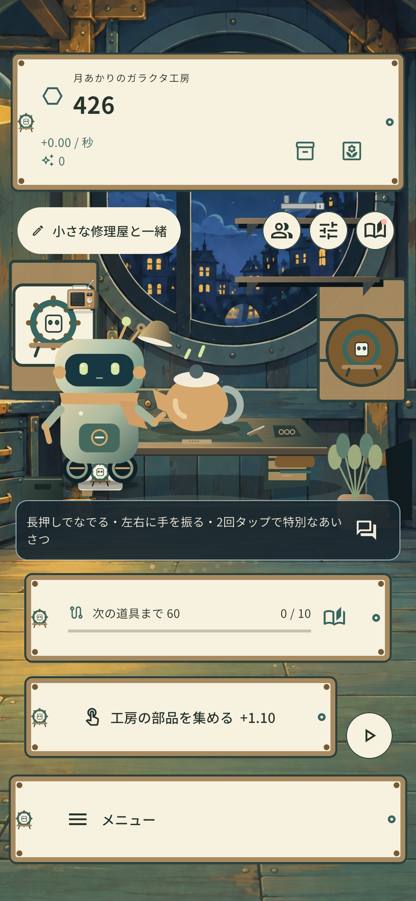
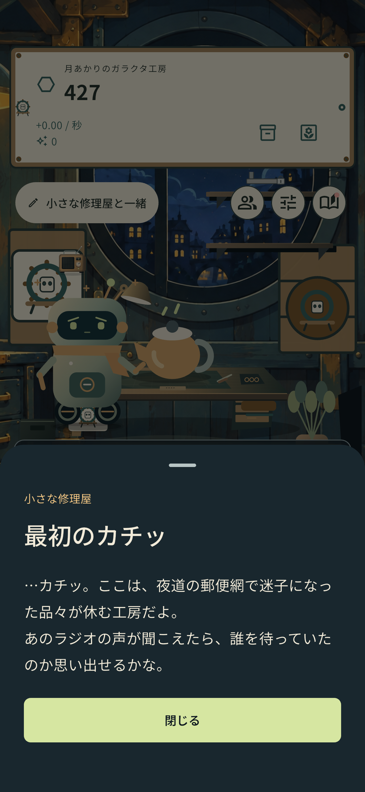
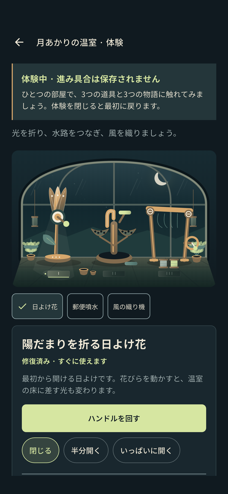

小さな部品を集めて
工房に集まった部品で、最初の道具をそろえます。ひとつひとつの手仕事が、次の修理につながります。
小さな工房から、遠い帰り道へ
夜道の郵便網の片隅で、明かりをともす小さな工房。部品を集め、古い物を直し、修理屋と一緒に小包に残された物語をたどるモバイルゲームを制作しています。
開発中 · 一般向けの公開ダウンロードとアカウントサービスはまだ提供していません。
Inside the workshop
工房で友だちと出会い、思い出を読み、月あかりの温室を体験できます。
横にスワイプして、3つの画面をご覧ください。

原寸で見る小さな修理屋と工房で部品を集め、修理を始めます。

原寸で見る修理の途中で明らかになる最初の思い出を読みます。

原寸で見る進行が保存されない体験で、温室の物に触れてみましょう。
開発中のiOSシミュレータで撮影した実際のゲーム画面・日本語UI。画像を選ぶと原寸で表示します。
小さな修理と、静かな発見
宇宙全体を救う前に、誰かの大切な物をもう一度使えるようにすることから。
工房に集まった部品で、最初の道具をそろえます。ひとつひとつの手仕事が、次の修理につながります。
道具を増やし、古い物をひとつずつ修復します。傷や使い込まれた跡も、その物の物語です。
修理屋と一緒に、物に残された物語をたどります。何気ない小包が、誰かの思い出につながっていきます。
公開前のご案内
ゲームは開発・テスト段階です。公開時期や提供する機能は、確定した内容を改めてお知らせします。
このサイトにはゲームへのログイン、アカウント作成、広告視聴、購入、ダウンロードの機能はありません。
最終更新日：2026年10月3日
開発中 · 一般向けの公開ダウンロードとアカウントサービスはまだ提供していません。
開発・プライバシーに関するお問い合わせ：ialskdji@gmail.com。送信前にお問い合わせとプライバシーの案内をご確認ください。